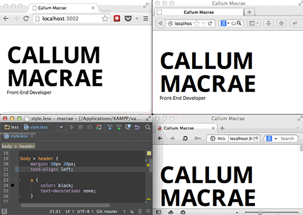
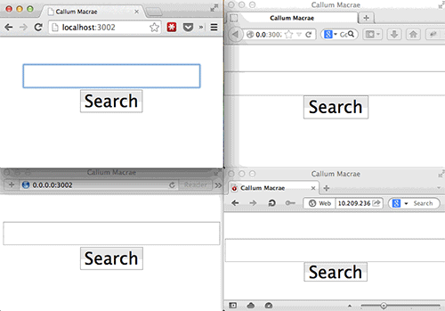

Перезагрузка браузера при изменениях
Вы можете заставить Gulp перезагрузить или обновить браузер, когда вы или что-то ещё, вроде задачи Gulp, изменяют файл. Есть два способа сделать это. Первый заключается в применении плагина LiveReload, а второй в использовании BrowserSync.
LiveReload
LiveReload сочетается с расширениями браузера (в том числе расширениями Chrome) для перезагрузки браузера при обнаружении изменения в файле. Он может быть использован с плагином gulp-watch или с помощью встроенной функции gulp.watch(), которую я описал ранее. Вот пример из файла README хранилища gulp-livereload:
var gulp = require('gulp'),
less = require('gulp-less'),
livereload = require('gulp-livereload'),
watch = require('gulp-watch');
gulp.task('less', function() {
gulp.src('less/*.less')
.pipe(watch())
.pipe(less())
.pipe(gulp.dest('css'))
.pipe(livereload());
});Здесь отслеживаются изменения всех файлов соответствующих less/*.less. При обнаружении изменений генерируется CSS, сохраняются файлы и перезагружается браузер.
BrowserSync
Альтернативой LiveReload является BrowserSync. Он также отображает изменения в браузере, но содержит гораздо больше возможностей.
Когда вы изменяете код, BrowserSync перезагружает страницу или, если это CSS, вносит в него изменения и страница не обновляется. Это довольно полезно, если ваш сайт не устойчив к обновлению. Предположим, вы совершаете четыре щелчка в одностраничном приложении, тогда при обновлении вы вернётесь к стартовой странице. С LiveReload вам потребуется каждый раз щёлкать четыре раза при внесении изменения. BrowserSync, однако, просто вносит изменения при модификации CSS, так что вам не придётся щёлкать «Назад».

BrowserSync — лучший способ проверить ваш макет в разных браузерах
BrowserSync также синхронизирует между браузерами щелчки, действия с формой и положение прокрутки. Вы можете открыть пару браузеров на настольном компьютере, а другой на iPhone и затем перемещаться по сайту. Ссылки будут открываться во всех браузерах, а когда вы прокрутите страницу вниз, страницы на всех устройствах также прокрутятся вниз (обычно также плавно!). При вводе текста в форме он будет набираться в каждом окне. И это поведение всегда можно отключить при желании.

BrowserSync не требует браузерного плагина
BrowserSync не требует плагина для браузера, потому что он работает с вашими файлами и обслуживается скриптом, который открывает сокет между браузером и сервером. У меня ранее это не вызвало никаких проблем.
Как ни странно, не существует плагина для Gulp, потому что BrowserSync не манипулирует файлами, поэтому он на деле работает самостоятельно. Тем не менее, модуль BrowserSync на npm можно вызвать напрямую из Gulp. Для начала установите его через npm:
npm install --save-dev browser-syncДалее следующий gulpfile.js запустит BrowserSync и начнёт следить за некоторыми файлами:
var gulp = require('gulp'),
browserSync = require('browser-sync');
gulp.task('browser-sync', function () {
var files = [
'app/**/*.html',
'app/assets/css/**/*.css',
'app/assets/imgs/**/*.png',
'app/assets/js/**/*.js'
];
browserSync.init(files, {
server: {
baseDir: './app'
}
});
});Выполните gulp browser-sync чтобы следить за соответствующими файлами на наличие изменений и запустить сервер, который обслуживает файлы в папке app. Разработчик BrowserSync написал о некоторых других штуках, которые вы можете посмотреть в его хранилище BrowserSync + Gulp.

Все материалы сайта доступны по лицензии Creative Commons «Attribution-NonCommercial» («Атрибуция — Некоммерческое использование») 4.0 Всемирная, если не указано иное.